01
Anthropic 宣布首次公开募股定价

Anthropic 宣布其 A 类普通股首次公开募股已完成定价。这是这家前沿 AI 公司的重要资本市场节点，也让其融资战略受到更多公众关注。对于 AI 行业，意义在于迈向公众持股及相应审视；公告本身并不能说明此后的股价表现。
每天一次，过滤 AI 噪音
Anthropic 宣布其 A 类普通股首次公开募股已完成定价。这是这家前沿 AI 公司的重要资本市场节点，也让其融资战略受到更多公众关注。对于 AI 行业，意义在于迈向公众持股及相应审视；公告本身并不能说明此后的股价表现。
OpenAI 介绍 Codex 如何在 macOS、Linux 和 Windows 上执行命令，同时落实用户控制的文件系统与网络边界。编码智能体既要使用开发工具，也需限制工具的访问范围。部署时应把执行边界与模型编程能力一起纳入工作流设计。
OpenAI 发布关于编码智能体加速 AI 研究的文章，强调能力仍不均衡，并讨论其对递归自我改进的含义。某一研发环节取得进展，并不代表选题、实验、调试及科学评估等所有环节都获得同样加速，这有助于审视生产力宣传。
OpenAI 说明其贯穿训练与部署的前沿 AI 风险管理方法，包括对齐、沙箱、拦截防护和监控。这是一组覆盖开发生命周期的措施。集成高能力智能体时，应共同考虑模型行为与运行限制；文章属于公司方法说明，而不是独立有效性审计。
Le Groupe Figaro 与 OpenAI 宣布合作，通过摘要和节选将《费加罗报》新闻引入 ChatGPT，并链接原文。这为 AI 界面中的新闻分发增加了出版商合作关系。公告未披露财务条款，也不足以判断对出版商流量和收入的影响。
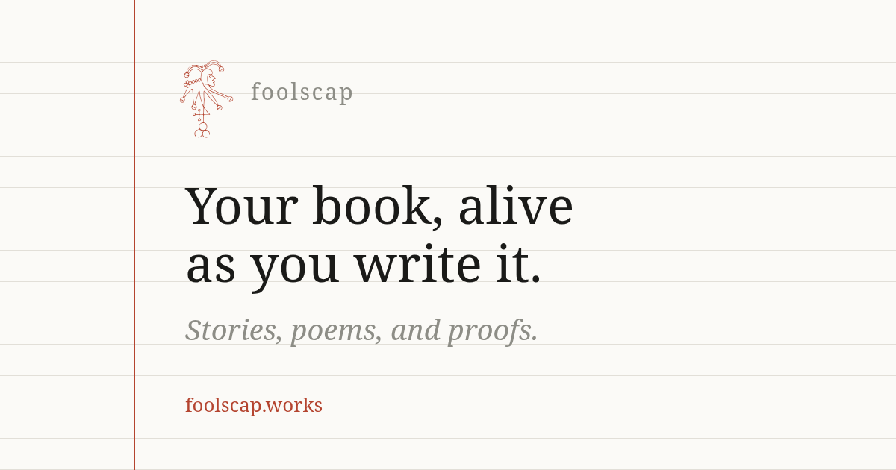
Foolscap 的开发者介绍了一款分析人物、想法与未完成线索、但不代写正文的写作工具。用户可通过对话询问书稿并执行操作。它提供结构反馈而非自动创作的 AI 辅助模式，也探索数学推理用途，但明确尚无 Lean 集成。

一个 Show HN 项目使用 WebGPU 在浏览器展示权重空间编程，基于现有实验编辑 Qwen3.5-0.8B 的 0.016% 权重，在不使用梯度下降的情况下减少推理循环。完整自主循环因显存不足而未实现，因此当前是交互式讲解演示，而非完整浏览器训练系统。

Google DeepMind 宣布 Gemini 4 Neon 开始推出，定位介于 Carbon 与 Hydrogen 之间，强调复杂软件工程、知识工作和科学任务中的能力与完成速度。这扩展了团队按工作流选型的空间，但产品定位与官方描述并不等于在所有任务上都具有独立验证的优势。
Sam Altman 宣布 GPT-6.2 Sol 与 Astra 发布，强调能力与 token 效率，并特别提到 Sol ultrafast。这为平衡能力、响应速度和推理消耗的团队增加了选择。该帖没有提供完整价格表或受控基准结果，因此效率描述应理解为公司的产品表述。
Demis Hassabis 的公告经转发称，Isomorphic Labs 获得 50 亿美元融资，以加速 AI 医药研究。这显示资金正大规模流向通用助手之外的应用领域。公司的愿景是推进疾病研究，但融资本身并不证明临床有效性、监管批准或新药交付。
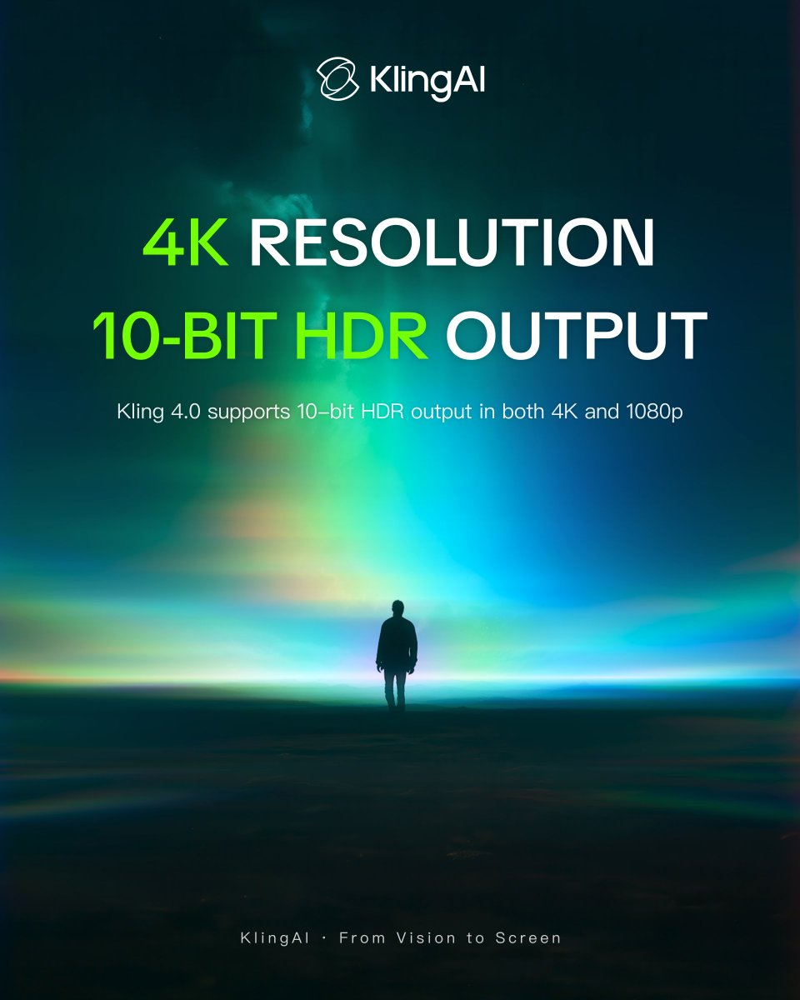
可灵宣布 4.0 视频模型支持原生 4K，并在 4K 和 1080p 输出中支持 10-bit HDR，面向更高细节和更丰富色彩。更新使输出格式更贴近专业视频需求，但分辨率与色彩能力不等于场景一致性或可控性提升，公告未给出对比评测。
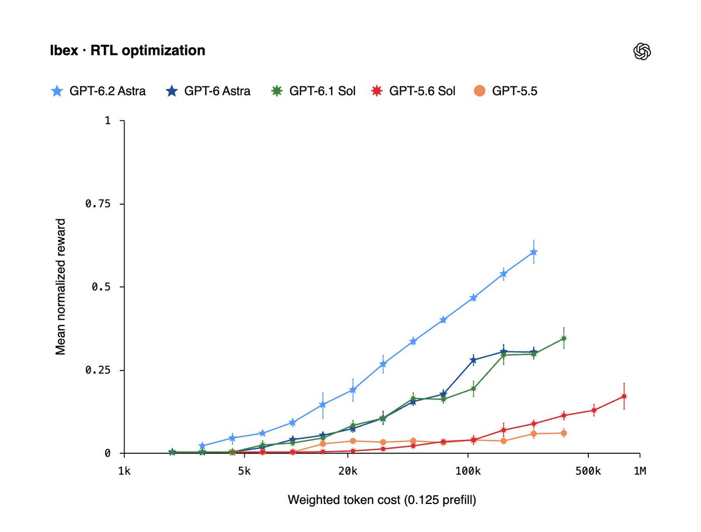
Greg Brockman 表示，OpenAI 模型在不到五个月内帮助 AMD 芯片项目取得约相当于额外一年工作的进展，部分成果进入近期流片的设计。这将 AI 辅助研发与具体硬件节点联系起来，但简短帖子未解释基线、评估方法或各项设计改动的贡献。

Pika 推出 Enact 研究预览，基于 Pika H3 Flex，让视频场景响应创作者，并强调类似片场导演、与虚拟演员交互的体验。这指向更具迭代性的创作流程。采集到的公告未明确生产环境可靠性或更广泛的可用范围。

Google DeepMind 宣布 Genie 4 已进入 Project Genie，提供原生音频、实时编辑及辅助创建交互虚拟世界的智能体。更新使世界生成向更具响应性的创作环境发展。长期交互中的一致性与模拟保真度仍需评估，简短公告未对此量化。
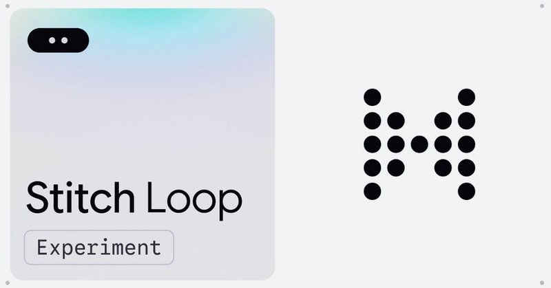
Google Labs 的 Stitch Loop 实验使用 Gemini 4 Carbon 与 CodeMender，观察线上指标，在沙箱测试修复，并围绕用户目标提交待人工审批的 PR。它将运行反馈连接到代码改进建议。审批是流程核心，不能将其理解为可无限制自主修改线上应用。
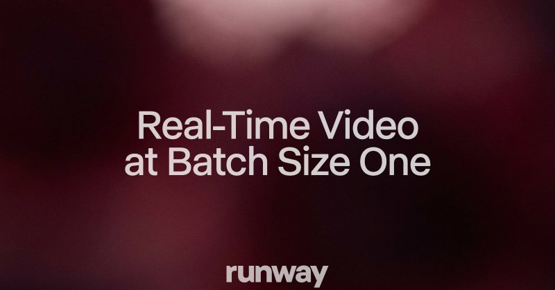
Runway 表示，运行 570 亿参数视频模型并达到每秒 24 帧所需 GPU 已从八张降至四张，研究文章讨论了优化及遇到的问题。这凸显推理工程对交互视频部署的重要性。简短公告没有列出全部硬件和负载条件，结果应限于其所述配置理解。

Anthropic 开发者账号发布实验性 Code Mode，让 Claude Code 编写脚本串联工具，并在长命令仍运行时作答。这对多步依赖操作具有意义，工具编排可能与单次模型回答同样重要。该功能明确属于可选实验能力，并非通用默认行为。

Google DeepMind 表示，Gemini 4 Hydrogen 与 Antigravity 机器人插件可连接受支持机械臂，在 MuJoCo 中练习，再通过对话执行现实任务。能力仍受硬件支持范围及仿真到现实流程约束，公告并未证明任意机器人或安全关键任务都无需额外验证。
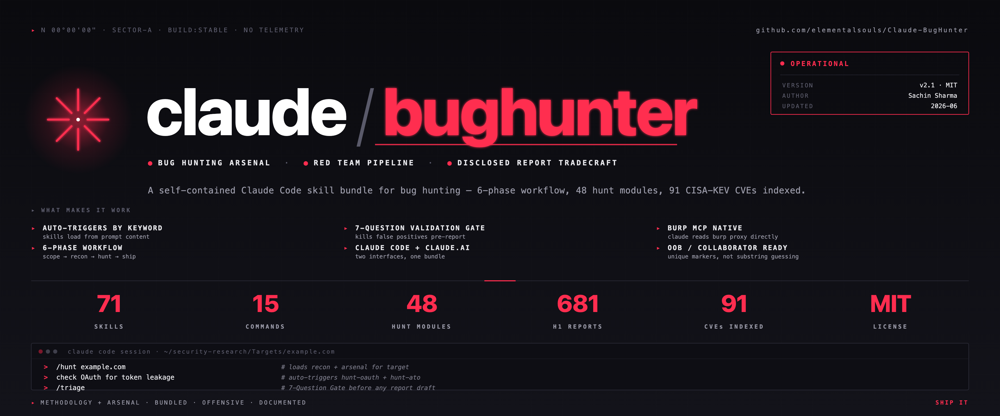
Claude-BugHunter 为漏洞研究与外部红队工作提供 Claude Code 技能包，项目描述列出 82 项技能、15 个命令及覆盖 24 类漏洞的 681 个已披露报告模式，并包含身份与基础设施矩阵。它展示了复用指令和历史报告的专业化智能体工作流，但热度与规模不等于已验证的发现能力。
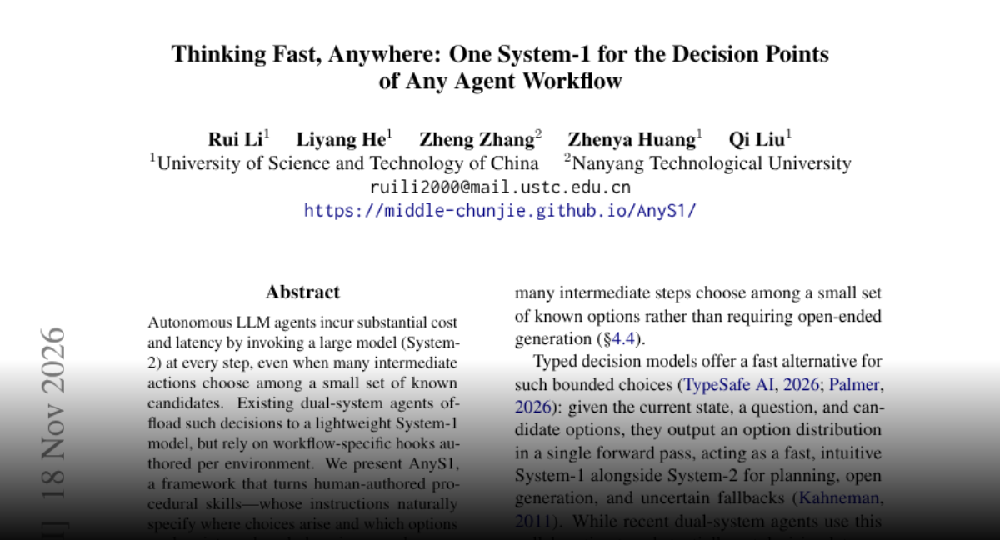
AnyS1 从流程技能中提取决策点，用经过校准的 4B 指针模型处理常规选择，不确定时再调用大模型。研究基于逾千项公开技能和执行状态训练，在三个未见基准上报告保持可靠性并降低 75% 至 91% 的任务成本，减少逐工作流编写集成逻辑的需求。

RoughCut-Bench 覆盖视觉驱动与语音驱动粗剪，包含 101 个视觉案例、831 段原视频、1,476 处高光标注及 84 个转录清理案例。研究结合结构化剪辑方案、标注对比与成片评估，发现当前视觉语言模型仍难生成符合专家判断的方案。
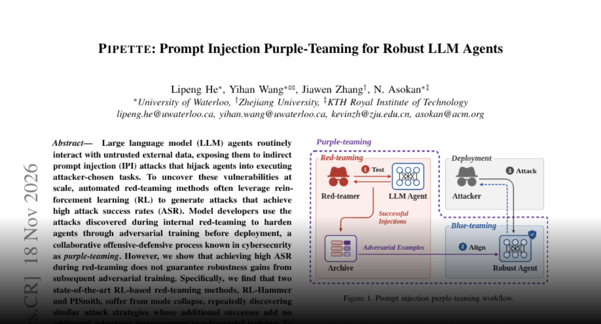
PIPETTE 研究为何自动提示注入攻击成功率高，却未必能训练出更强防御。作者发现攻击发现过程存在模式坍缩，以字典学习奖励扩大策略覆盖，并结合在线对抗训练。在 AgentDojo 与 ASB 上报告较强防御及正常任务效用，强调攻击多样性和训练价值。
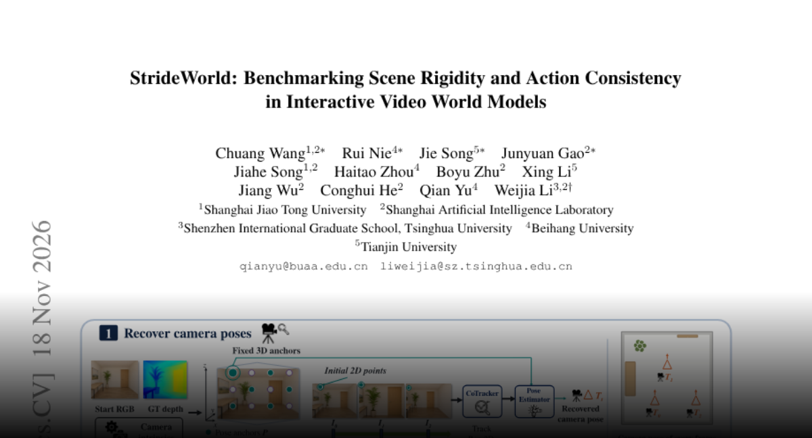
StrideWorld 在待测运动发生前固定参考，分别评估场景刚性与动作一致性，避免评测参考吸收模型自身变形。研究覆盖 140 个起始视角，发现除一个模型外均存在场景变形，组合路线也常出问题。这为世界模型补充了持续几何与可预测运动的检验。

“分辨率假说”认为，自我改进智能体的瓶颈常在于噪声评估无法区分有益与有害改动。研究涉及七种方法、六个模型和逾千万次调用，发现候选选择与方法排名都受误差影响。提高评估辨别力可能比继续生成更多提示、技能或记忆更重要。
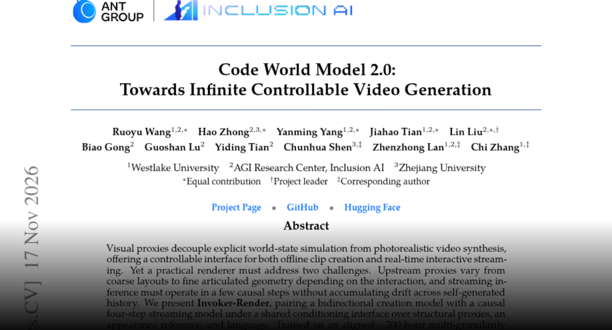
Code World Model 2.0 提出 Invoker-Render，将双向创作模型与因果四步流式渲染器结合，以结构代理、外观参考和语言控制。渐进式训练从真实视频历史转向自主生成轨迹，以减少累积漂移。作者报告稳定的三十分钟赛车演示，探索将世界状态与写实渲染分离。

VAE Rhythm 利用视频生成器按组解码帧时留下的周期痕迹，通过相位扫描测量重建误差周期性，无需先训练检测器。作者测试 31 个生成器的 39 个变体，并用于直接检测或增强已有检测器。结果显示管线痕迹可补充可见伪影，但结论仍限于所测模型和数据。
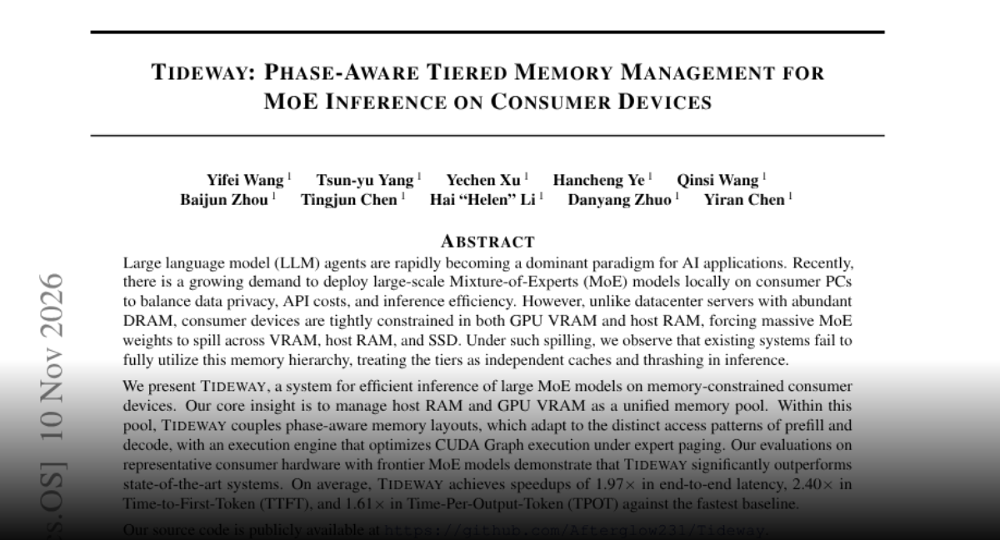
Tideway 面向权重溢出至显存、主机内存与 SSD 的消费级设备 MoE 推理，将 RAM 和 VRAM 协调管理，并针对预填充、解码和专家分页优化。作者相对最快基线报告平均 1.97 倍端到端延迟加速与 2.40 倍首 token 加速，凸显内存管理的重要性。